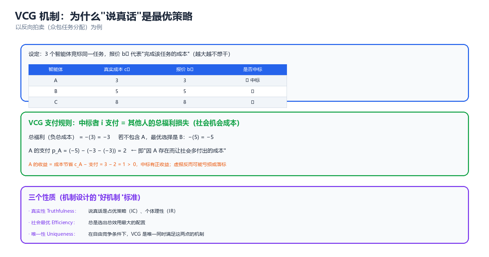
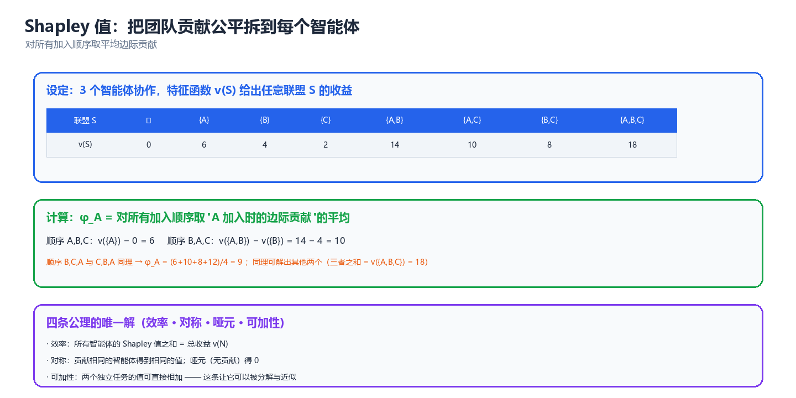

第 04 章 机制设计与社会选择（Mechanism Design & Social Choice）
前三章回答的是"给定规则，自利的主体们会停在哪里"；这一章问反问题——如果我们希望它们停在某个地方，规则本身该怎么设计。机制设计是"逆博弈论"：把博弈论当工程工具用；社会选择则是它不带货币转移的那个硬核分支，用几条不可能定理划定了"任何规则都做不到什么"的天花板。
一、社会选择与不可能性
社会选择理论（Social Choice Theory）研究一个最朴素的问题：一群人各有各的偏好，如何把它们变成一个集体决策？ 它之所以是机制设计的起点，是因为它用几条"不可能定理"告诉了我们：在没有转移支付的一般偏好下，"既公平又防操纵又非独裁"的规则根本不存在。理解了这些天花板，才能明白为什么后面几节要靠拍卖、匹配、Shapley 值这些"带结构"的工具来绕开它们。
1.1 偏好聚合问题（社会选择函数 vs 社会福利函数）
先形式化。假设有一组备选方案（alternatives） \(X\)，\(|X| \ge 3\)；有 \(n\) 个代理人（agents），每人持有一个对 \(X\) 的偏好排序（preference ordering）\(R_i\)——一个完整的、可传递的弱序（weak order），记 \(a \succ_i b\) 表示 \(i\) 认为 \(a\) 严格优于 \(b\)，\(a \succeq_i b\) 表示弱优于。全体代理人的偏好构成一个偏好剖面（preference profile）：
其中 \(\mathcal{R}\) 是可容许排序的集合（若允许任意排序，称无限制定义域）。所谓"聚合"，就是要从这个剖面出发，得到一个集体判断。两种常见的输出对象：
| 输出对象 | 英文 | 记法 | 输出什么 | 典型场景 |
|---|---|---|---|---|
| 社会选择函数 | Social Choice Function (SCF) | \(f: \mathcal{R}^n \to X\) | 一个（或一组）胜出方案 | 评奖、选方案、选 leader |
| 社会选择对应 | Social Choice Correspondence (SCC) | \(F: \mathcal{R}^n \rightrightarrows X\) | 一个非空方案集合 | 出现平局时保留多个 |
| 社会福利函数 | Social Welfare Function (SWF) | \(F: \mathcal{R}^n \to \mathcal{R}\) | 一个完整的社会排序 | 需要给全部方案排名 |
SCF 与 SWF 的差别在输出粒度：SCF 只关心"谁赢"，SWF 关心"整张社会榜单"。Arrow 不可能定理（§1.2）针对的是 SWF——它比 SCF 要求更强，因此也更容易撞墙；Gibbard–Satterthwaite 定理（§1.3）针对的是 SCF。两者是同一枚硬币的两面。
下图给出社会选择的最基本管线——注意"偏好剖面"是唯一输入，全部困难都源自"输入是私有的、且可能被谎报"：
私有偏好 (可能谎报!)
R_1 ──┐
R_2 ──┼──► ┌──────────────────┐ ──► 社会决策
... ──┤ │ 聚合规则 / 机制 │ (x 或 社会排序)
R_n ──┘ └──────────────────┘
▲ │
│ ▼
(设计者选择) 结果对每个人意味着什么
核心思想：社会选择的问题不是"算不出结果"，而是输入信息本身不可信、且聚合规则会扭曲激励。一个"好"的规则要同时对抗两个敌人：个体偏好之间可能毫无共识（Condorcet 循环），以及个体有动机歪曲报告（策略投票）。
一个立刻能感受到的困难是多数决的循环（Condorcet Paradox）。当 3 位选民偏好为 \(A \succ B \succ C\)、\(B \succ C \succ A\)、\(C \succ A \succ B\) 时，两两多数决给出 \(A \succ B\)、\(B \succ C\)、\(C \succ A\)——集体偏好不传递。这意味着"谁赢"严重依赖赛程安排（议程操纵，agenda manipulation）。见 §2.1 的实跑。
1.2 Arrow 不可能定理（四个条件 + 直觉证明）
Kenneth Arrow（1951）问了一个极简的问题：什么样的社会福利函数 \(F\) 才算"合理"？ 他给出四个看起来谁都不会反对的条件。
| 条件 | 英文 | 含义 | 是否苛刻 |
|---|---|---|---|
| U 无限制定义域 | Unrestricted Domain | 任意个体偏好剖面都必须是合法输入 | 中 |
| P 弱帕累托 | Weak Pareto / Pareto Principle | 若所有人都认为 \(a \succ b\)，则社会也须认为 \(a \succ b\) | 低（几乎不可放弃） |
| IIA 无关备选独立性 | Independence of Irrelevant Alternatives | 社会对 \(a,b\) 的相对排序只取决于各人对 \(a,b\) 的相对排序，与 \(c\) 无关 | 高（最可疑，但去掉后定理失效） |
| ND 非独裁 | Non-Dictatorship | 不存在某个 \(i\) 使社会排序永远等于他的私人排序 | 低（民主的最低要求） |
Arrow 不可能定理：
换句话说：U + P + IIA \(\Rightarrow\) ND 不成立。四条里必须牺牲一条。
直觉证明（决定性集合法）。证明的核心是"决定性（decisive）"这个概念：称一个代理人集合 \(S\) 决定性，若每当 \(S\) 中所有人都认为 \(a \succ b\)（其他人随便），社会就认为 \(a \succ b\)。
| 步骤 | 论证 | 用到的条件 |
|---|---|---|
| 1 | 全体 \(N\) 对任何 \((a,b)\) 都是决定性的 | P（帕累托） |
| 2 | 从 \(N\) 出发不断剔除成员，得到一个极小决定性集合 \(S^*\)（收缩引理 / Contagion Lemma） | U + IIA |
| 3 | 证明 \(S^*\) 只能含单个成员 \(\{d\}\)：若含两个，则可构造第三个备选 \(c\) 使其冲突 | IIA（\(c\) 是"无关备选"） |
| 4 | 证明 \(\{d\}\) 对任意一对 \((x,y)\) 都决定性 | IIA + P |
| 5 | 于是 \(d\) 是独裁者，与 ND 矛盾 | — |
核心思想：Arrow 的证明本质是一个"收缩"过程——帕累托性质保证全体是决定性的，而 IIA 允许我们把"决定性"像传染病一样从大集合收缩到小集合，最终收缩到一个不可再分的点，即独裁者。IIA 是咒语的关键词：正是"两两比较互不干扰"这条假设，让决策权可以被逼到单个代理人手里。
必须强调定理的边界：它只在 \(|X| \ge 3\)、偏好为一般（序数、无货币）时成立。一旦允许货币转移（quasi-linear utility），Arrow 的诅咒被 VCG 机制打破（见 §3.3、§8.3）——因为货币提供了 IIA 之外的额外"尺度"，让聚合不必只依赖两两比较。
1.3 Gibbard–Satterthwaite 策略证明不可能性
Arrow 讲的是"输出排序的公平性"，把问题换成"输出单个胜者 + 防操纵"，就得到另一条更"工程"的不可能定理。
先定义策略证明（strategy-proofness）：一个社会选择函数 \(f\) 是策略证明的，当且仅当说真话是每个代理人的弱占优策略——无论别人怎么报，如实上报自己的偏好 \(R_i\) 都不会比谎报更差：
Gibbard（1973）– Satterthwaite（1975）定理：
即：唯一不可被操纵的非独裁规则不存在。任何"正常"的投票规则——多数决、波达、即时复选（IRV）——都可以被某个代理人通过谎报偏好而改善结果。见 §2.2 的波达操纵实跑。
两条定理的关系值得单独列表：
| 维度 | Arrow 定理 | Gibbard–Satterthwaite 定理 |
|---|---|---|
| 聚合对象 | 社会福利函数（整张排序） | 社会选择函数（单个胜者） |
| 核心冲突 | IIA vs 非独裁 | 策略证明 vs 非独裁 |
| 证明路线 | 决定性集合收缩 | 用 Arrow 定理 + 构造性归约 |
| 对机制设计的意义 | "排序聚合"无完美解 | "防操纵"无完美解 |
| 破局方式 | 允许货币转移 → VCG | 允许货币转移 → VCG |
⚠️ 这两条定理只在没有货币转移的纯序数偏好下成立。这正是机制设计的分水岭：想让自利 = 利他，就必须引入可转移效用（transferable utility），也就是钱（或等价的一般化购买力/信用）。 后面 VCG、拍卖、二次投票全部建立在这一让步之上。
1.4 对 LLM 多智能体投票/共识机制的启示
当下最流行的 LLM 多智能体"协作"范式之一就是投票：Self-Consistency（对同一问题多次采样后取多数答案）、多智能体辩论（debate）后投票、AutoGen/MetaGPT 中多个角色的最终裁决。这些做法本质上都是社会选择函数。Arrow 与 Gibbard–Satterthwaite 给出了几条硬约束：
| 领域结论 | 对 LLM 多智能体系统的含义 |
|---|---|
| 不存在非独裁策略证明规则 | 无法设计一个"既尊重每个 agent 的判断、又不怕有人胡说"的通用投票规则；必须在两者间选一个 |
| 多数决不传递（Condorcet 循环） | 当候选答案 ≥3 时，"投票"结果会随呈现顺序、few-shot 示例、prompt 措辞变化——议程操纵在 LLM 场景里极易发生 |
| IIA 难以满足 | LLM 的偏好不是两两独立的：上下文里的第三个候选会改变它对前两个的判断（与人类一样受"无关备选"影响） |
| 偏好可被捏造 | prompt injection、sycophancy（谄媚）、角色设定都会改变某个 agent 的"报告"，等价于策略投票 |
工程上的三条可操作结论（延伸见第 08 章 LLM 多智能体）：
- 别假装投票是诚实的：LLM agent 的"偏好"是 prompt 的函数。要减少操纵，就减少每个 agent 对"其他 agent 在怎么投"的可见性（隔离上下文），这与消除 IIA 违反的方向一致。
- 候选数控制在 2：当 \(|X| = 2\) 时，多数决是策略证明的（唯一非独裁策略证明规则就是二元多数决），Arrow 的诅咒在两点上不生效。二元裁决（"接受 / 拒绝"、"通过 / 回滚"）比多元选择鲁棒得多。
- 引入"货币"式信号：当希望表达"强度"而非仅"顺序"时，用打分/置信度/预算（带成本的表态）替代单纯排序——这就是 §2.3 二次投票的思路。
二、投票机制族
2.1 多数决 / 波达计数 / 孔多塞方法
投票规则家族繁多，但可归为三类立场：只看第一名（plurality）、看完整排序（Borda）、做两两比较（Condorcet）。下表总结常用规则。
| 规则 | 英文 | 规则描述 | 满足孔多塞 | 策略证明 | 主要毛病 |
|---|---|---|---|---|---|
| 相对多数决 | Plurality (FPTP) | 得票（第一名）最多者胜 | 否 | 否 | 分票、结果极端依赖候选人进场 |
| 两轮决选 | Runoff / Two-round | 首轮前二再决选 | 否 | 否 | 仍可被"造王者"操纵 |
| 波达计数 | Borda Count | 第 \(r\) 位得 \(m-r\) 分，总分最高者胜 | 否 | 否 | 易被"抬票/压票"操纵 |
| 孔多塞方法 | Condorcet Method | 若存在两两不败者（孔多塞赢家）则选之 | 是 | 否 | 循环时无解，需破局规则 |
| 科普兰法 | Copeland | 赢的两两对决数最多者胜 | 是（循环时有解） | 否 | 需 \(O(m^2)\) 对决 |
| 认可投票 | Approval Voting | 每人勾选所有认可者，得票最多者胜 | 否 | 否 | "勾谁"本身是策略 |
| 即时复选 | IRV / STV | 淘汰最低者并转移其票 | 否 | 否 | 非单调（得更多第一票反可能输） |
| 凯梅尼法 | Kemeny | 找与全体排序"两两一致度"最高的社会排序 | 是 | 否 | NP-hard |
先感受孔多塞循环——多数决的传递性崩塌。下面这段代码枚举三位选民的偏好，做全部两两对决：
# 孔多塞循环: 多数决的两两结果可以互相矛盾, 且无传递性
import itertools
CANDS = ["A", "B", "C"]
profile = [["A", "B", "C"], ["B", "C", "A"], ["C", "A", "B"]] # 三位选民的偏好
def pairwise(pref_list, x, y):
"""统计有多少选民认为 x 优于 y"""
return sum(1 for pref in pref_list if pref.index(x) < pref.index(y))
for x, y in itertools.combinations(CANDS, 2):
nx, ny = pairwise(profile, x, y), pairwise(profile, y, x)
win = x if nx > ny else y
print(f" {x} vs {y}: {nx}:{ny} -> 胜者 {win}")
print(" => A>B, B>C, C>A 形成孔多塞循环, 多数决无传递性")
# 预期输出:
# A vs B: 2:1 -> 胜者 A
# A vs C: 1:2 -> 胜者 C
# B vs C: 2:1 -> 胜者 B
# => A>B, B>C, C>A 形成孔多塞循环, 多数决无传递性
结果是一个石头剪刀布式的循环：\(A\) 能赢 \(B\)，\(B\) 能赢 \(C\)，\(C\) 又能赢 \(A\)。这时"谁赢"完全取决于谁先跟谁比（议程），这正是"议程操纵"的数学根源，也是 LLM 辩论里"答案顺序影响结论"的同一现象。
孔多塞赢家 ≠ 波达赢家。经典的例子是，波达计数选出的往往是"最不招人恨"的妥协候选人，而孔多塞赢家是两两所向披靡者；两者可以完全不同。历史上多套投票法并存、结果各异，根源就在这里。
选择投票规则:
┌─────────────────────┐
│ 只看第一名? │──是──► Plurality / Runoff
└──────────┬──────────┘
│否
┌──────────▼──────────┐
│ 看完整排序? │──是──► Borda / Kemeny
└──────────┬──────────┘
│否
┌──────────▼──────────┐
│ 做两两比较? │──是──► Condorcet / Copeland
└─────────────────────┘
2.2 策略与操纵（实跑：一个可被操纵的投票例子）
Gibbard–Satterthwaite 说每个非独裁投票规则都可被操纵——但"可被操纵"是存在性结论，重要的是能不能在具体例子里看见它。下面构造一个波达计数的操纵实例：4 位选民、4 个候选（A/B/C/D）。
真实偏好剖面为：选民1 \(A \succ C \succ D \succ B\)、选民2 \(B \succ A \succ D \succ C\)、选民3、4 均为 \(D \succ B \succ A \succ C\)。波达计数（4 候选：第 1 名 3 分、第 2 名 2 分、第 3 名 1 分、第 4 名 0 分）下 D 胜出。但选民2 真实想要 \(A\) 赢，于是他把 A 抬到第一名谎报成 \(A \succ B \succ C \succ D\)：
# 波达计数的操纵: 一位选民谎报偏好即可改变获胜者
CANDS = ["A", "B", "C", "D"]
def borda(profile):
"""Borda 计数: 4 个候选时排名第 r 位得 3-r 分"""
scores = {c: 0 for c in CANDS}
for pref in profile:
for rank, c in enumerate(pref):
scores[c] += len(CANDS) - 1 - rank
return scores
def winner(profile):
s = borda(profile)
return max(CANDS, key=lambda c: s[c]), s
# 四位选民的真实偏好
honest = [list("ACDB"), list("BADC"), list("DBAC"), list("DBAC")]
w, s = winner(honest)
print("诚实投票得分:", s, "-> 胜者", w)
# 选民2(真实偏好 B>A>D>C) 谎报 ABCD, 把 A 抬到第一
manip = honest[:1] + [list("ABCD")] + honest[2:]
w2, s2 = winner(manip)
print("选民2(真实偏好 BADC)谎报 ABCD 后得分:", s2, "-> 胜者", w2)
print("选民2 真实偏好 B>A>D>C, 把 A 抬到第一使 A 当选 (他更想要 A 而非 D)")
# 预期输出:
# 诚实投票得分: {'A': 7, 'B': 7, 'C': 2, 'D': 8} -> 胜者 D
# 选民2(真实偏好 BADC)谎报 ABCD 后得分: {'A': 8, 'B': 6, 'C': 3, 'D': 7} -> 胜者 A
# 选民2 真实偏好 B>A>D>C, 把 A 抬到第一使 A 当选 (他更想要 A 而非 D)
诚实投票 D 以 8 分领先；选民2 仅仅重排了自己的排名，就让 A 从 7 分升到 8 分、D 从 8 分跌到 7 分，胜者从 D 变成 A——而 A 恰好是选民2 的次优选择。这就是"策略投票"：谎报比诚实更接近自己想要的结果。
操纵的三类手法值得对照记忆：
| 手法 | 英文 | 做法 | 典型受害规则 |
|---|---|---|---|
| 抬票 | Compromise / Push | 把可行的"勉强可接受"选项抬到第一 | Borda、Plurality |
| 压票 | Burying | 把最危险的对手压到最后一名的位置 | Borda |
| 弃权/献祭 | Strategic Abstention | 隐藏真偏好，只投"可赢"的选项 | Plurality、Runoff |
核心思想：投票规则的"表达力"与"抗操纵性"是此消彼长的。 波达计数要求选民表达完整排序（表达力强），代价就是给了"压票/抬票"更大的操纵空间；相对多数决信息用得少（只看第一），操纵空间相对小但也更易"分票"。Gibbard–Satterthwaite 保证这种张力无法被彻底消除。
2.3 二次投票与预算约束
当问题从"选谁"变成"这件事对我有多重要"时，序数投票不够用了。二次投票（Quadratic Voting, QV）（Lalley & Weyl, 2018）是表达偏好强度的优雅机制。
规则：每位投票者 \(i\) 对某提案购买 \(k_i\) 张选票，代价是 \(k_i^2\)（于是边际成本 = \(2k_i\)，随投票数线性上升）。投票者净效用：
其中 \(w_i\) 是该提案给 \(i\) 带来的价值（以"票"为单位）。对 \(k_i\) 求导：\(\dfrac{\partial u_i}{\partial k_i} = w_i - 2k_i = 0 \Rightarrow k_i^* = \dfrac{w_i}{2}\)。最优购票数正比于真实价值强度——QV 让"用买票数如实表达强度"成为均衡行为。
| 机制 | 每人花费 | 表达什么 | 边际成本 | 抗 Sybil |
|---|---|---|---|---|
| 一人一票 | 0 | 方向（每票等价） | 0 | 强（需身份） |
| 代币投票 (1 token = 1 vote) | 线性 | 财富 | 常数 | 弱（买票即可） |
| 二次投票 | 票数平方 | 偏好强度 | 线性递增 | 强（N 个小号成本 = N² 倍） |
| 二次融资 QF | 匹配平方根和 | 公共品众筹 | — | 强 |
QV 的杀手锏是抗 Sybil 攻击：把 \(k\) 张票拆成 \(N\) 个身份各投 \(k/N\) 张，总成本从 \(k^2\) 降为 \(N \cdot (k/N)^2 = k^2/N\)，看似省钱——但 QV 通过对"身份成本"的假设（每个身份必须有真实成本）堵住了这条路。关键前提：身份不可廉价复制。 如果身份免费（比如随便注册的 LLM agent），QV 会退化为"分裂投票"的套利游戏。这一点在 §7.3 的 LLM 代币机制里会再次出现。
⚠️ 预算约束下的 QV 并非真的"诚实"：当一个人的总预算有限、且多提案同时投票时，\(k_i^* = w_i/2\) 会被预算上限截断，强偏好者被"压平"。QV 的理论最优性依赖"近似连续、无硬预算约束"的理想假设。
三、拍卖与 VCG
拍卖是机制设计最成功的落地品类——从 Google 广告位到频谱牌照到云计算竞价实例，全都是拍卖。本节从最简四种拍卖出发，走到 VCG 与组合拍卖。
3.1 四种基本拍卖与收益等价定理
| 拍卖 | 英文 | 过程 | 成交价 | 出价是否可见 |
|---|---|---|---|---|
| 英式（升价） | English / Ascending | 价格递增，直到只剩一个买家 | 约等于次高估值 | 公开 |
| 荷式（降价） | Dutch / Descending | 价格递减，谁先喊停谁买 | 喊停价 | 公开 |
| 一价密封 | First-price Sealed-bid | 同时密封出价，最高者付自己的报价 | 最高报价 | 不公开 |
| 二价密封 | Second-price (Vickrey) | 同时密封出价，最高者付次高报价 | 次高报价 | 不公开 |
模型设定：独立私有价值（Independent Private Values, IPV）——每位买家知道自己对物品的估值 \(v_i\)，且估值独立同分布 \(F\)、所有人风险中性、拍卖是对称的。
收益等价定理（Revenue Equivalence Theorem, Vickrey 1961 / Myerson 1981）：
更精确地：只要两种机制的配置规则（谁得到物品）相同，且最低类型的期望效用相同，则它们的期望收益就相同。英式与二价等价（都付次高价），荷式与一价等价（都是"猜别人的最高价"的博弈）。
图：英式=二价、荷式=一价，期望收益在 IPV 假设下相等——这就是收益等价定理的直观图像。
| 结论 | 含义 | 被打破的条件 |
|---|---|---|
| 四拍卖期望收益相等 | 卖方无法靠"选拍卖形式"薅更多 | 风险厌恶、估值相关、非对称、买家合谋 |
| 二价拍卖说真话是占优策略 | 出价不需猜别人 | 有合谋/串标时失效 |
| 一价拍卖需"报价阴影" | 报 \(b < v\) 是均衡 | 买家数越多，阴影越小（趋近说真话） |
核心思想：收益等价定理的深层含义是——机制设计的收益来自"配置规则"而非"竞价形式"。想让卖方多收钱，得改变"谁在什么条件下得到物品"（如设保留价、做歧视性定价），而不是换一种拍卖花样。
3.2 第二价格拍卖为何说真话是占优策略（实跑模拟验证）
二价拍卖（Vickrey 拍卖）的核心定理：如实报出估值 \(b_i = v_i\) 是弱占优策略。直觉证明分两种偏离：
- 设对手最高报价为 \(p = \max_{j \ne i} b_j\)。
- 高报（\(b_i > v_i\)）：只在原本赢不了时（\(p > v_i\)）才改变结果。此时若 \(v_i < p < b_i\)，你会"赢"但支付 \(p > v_i\)，效用 \(v_i - p < 0\)——比不赢（效用 0）更差。
- 低报（\(b_i < v_i\)）：只在原本赢得了时（\(p < v_i\)）才改变结果。此时若 \(b_i < p < v_i\)，你会"输"，丢掉 \(v_i - p > 0\) 的正效用——比赢更差。
于是任何偏离都不可能严格改善。下面用 20000 组随机对手报价，逐一比较"高报/低报"与"如实报"的效用：
# 二价拍卖: 用随机对手报价验证"说真话是弱占优策略"
import random
random.seed(0)
def util(bid, value, opp):
"""二价拍卖效用: 赢则付对手最高报价, 输则 0"""
top = max(opp)
return value - top if bid > top else 0.0
bad = 0 # 偏离严格更好的次数
V = 70 # 真实估值
for _ in range(20000):
opp = [random.uniform(0, 100) for _ in range(3)] # 3 个对手的随机报价
u = util(V, V, opp)
for b in (50, 60, 80, 90, 100): # 低报与高报
if util(b, V, opp) > u + 1e-9:
bad += 1
print("在 20000 组随机对手报价下, 偏离真实估值(70)严格更好的次数:", bad)
print("=> 说真话是弱占优策略")
# 预期输出:
# 在 20000 组随机对手报价下, 偏离真实估值(70)严格更好的次数: 0
# => 说真话是弱占优策略
结果是 0 次——在全部 20000 组场景里、对全部 5 个偏离报价，没有一次比说真话更好。注意这是弱占优：偏离有时"持平"（结果不变），但从不"严格更好"。这正是二价拍卖优雅之处：它把"出价"从一个策略问题变成了一个如实报告问题。
3.3 VCG 通式、支付规则与社会机会成本（实跑数值例）
二价拍卖是 VCG 在"单物品"下的特例。VCG 机制（Vickrey–Clarke–Groves）把"说真话"从单物品推广到了任意配置问题（多物品、多买家、甚至任意稀缺资源分配）。
设配置集为 \(X\)（所有可能的资源分配方案），买家人 \(i\) 对配置 \(x\) 的估值为 \(v_i(x)\)。VCG 做两件事：
（1）选择社会福利最大化的配置：
（2）支付 = 该买家造成的"社会机会成本"（他不在时，其他人本可获得的福利，减去他在时别人实际获得的福利）：
其中 \(x^*_{-i} = \arg\max_x \sum_{j \ne i} v_j(x)\) 是"把 \(i\) 踢出去后"的最优配置。这个支付形式也叫 Clarke pivot 规则。

图：VCG 向每个赢家收取"他挤掉的、别人本可获得的福利"，使得"操控配置无利可图"。
单物品情形：\(x^*_{-i}\) 就是"次高估值者拿到物品"，\(\sum_{j\ne i} v_j(x^*_{-i})\) = 次高估值，\(\sum_{j \ne i} v_j(x^*)\) = 0（赢家拿走物品，其他人得 0），所以 $p_i = $ 次高估值——正是二价拍卖。
下面实跑一个组合 VCG 数值例：2 件物品 \(x,y\)，3 位买家，对物品子集有互补/替代估值。程序枚举所有分配求社会最优，再按 VCG 规则算支付：
# 组合 VCG: 2 件物品, 3 位买家, 每人对自己拿到的子集有估值
import itertools
items = ("x", "y")
vals = { # 买家 -> {物品子集: 估值}
"甲": {(): 0, ("x",): 50, ("y",): 40, ("x", "y"): 70},
"乙": {(): 0, ("x",): 30, ("y",): 40, ("x", "y"): 50},
"丙": {(): 0, ("x",): 30, ("y",): 10, ("x", "y"): 35},
}
buyers = ["甲", "乙", "丙"]
def best(players):
"""枚举每个物品的归属, 求社会福利最大分配"""
bw, ba = -1, None
for assign in itertools.product(players + [None], repeat=len(items)):
bundle = {p: [] for p in players}
for it, p in zip(items, assign):
if p:
bundle[p].append(it)
w = sum(vals[p][tuple(sorted(b))] for p in players for b in [bundle[p]])
if w > bw:
bw, ba = w, {p: tuple(sorted(b)) for p, b in bundle.items()}
return bw, ba
W, alloc = best(buyers)
print("最优分配:", alloc, "社会总福利:", W)
total_pay = 0
for p in buyers:
others = [q for q in buyers if q != p]
W_wo, _ = best(others) # 没有 p 时, 他人最优福利
others_here = W - vals[p][alloc[p]] # 有 p 时, 他人实际福利
pay = W_wo - others_here # VCG 支付 = 社会机会成本
total_pay += pay
print(f" {p}: 无他时他人最优={W_wo}, 有他时他人实际={others_here}, "
f"支付={pay}, 效用={vals[p][alloc[p]] - pay}")
print("总支付(卖方收入):", total_pay,
"| 社会总福利 = 总效用 + 总支付 =", (W - total_pay) + total_pay)
# 预期输出:
# 最优分配: {'甲': ('x',), '乙': ('y',), '丙': ()} 社会总福利: 90
# 甲: 无他时他人最优=70, 有他时他人实际=40, 支付=30, 效用=20
# 乙: 无他时他人最优=70, 有他时他人实际=50, 支付=20, 效用=20
# 丙: 无他时他人最优=90, 有他时他人实际=90, 支付=0, 效用=0
# 总支付(卖方收入): 50 | 社会总福利 = 总效用 + 总支付 = 90
读法：甲拿 \(x\)、乙拿 \(y\)，总福利 90。甲支付 30——因为"若没有甲"，乙丙能瓜分出 70 的福利；而"有甲时"乙丙只得到 40。甲挤掉了 \(70-40=30\) 的社会价值，所以付 30。丙什么都没拿到，支付 0。
VCG 的三大性质（§8 给严格证明）：
| 性质 | 英文 | 陈述 | 是否总成立 |
|---|---|---|---|
| 占优策略激励相容 | DSIC / Truthfulness | 如实报价是弱占优 | ✅ 总成立 |
| 个体理性 | IR / Voluntary Participation | 参与不亏（弱效用 ≥0） | ✅ 总成立（无正外部性时） |
| 配置有效 | Efficiency | 选出社会福利最大配置 | ✅ 定义如此 |
| 预算平衡 | Budget Balance | 卖方收入 ≥ 支付给买家 | ❌ 一般不成立 |
⚠️ VCG 最致命缺陷：支付总额可能小于成本、也可能远大于社会福利。在"互补型"估值下，VCG 的收益可能极低（甚至为负）；而"替代型"下又可能过高。这使得 VCG 在真实拍卖（频谱、广告）里常被核/核心选择拍卖（Core-selecting）或 ASCA 等替代。见 §8.4。
3.4 组合拍卖与胜者确定问题 WDP
当物品之间有互补或替代关系时（比如"我需要整条航线才值钱"或"两件只要一件"），逐件单独拍卖会导致曝光问题（Exposure Problem）——买家为组合出价，但只能赢到其中一部分，结果估值大幅缩水。解法是组合拍卖（Combinatorial Auction）：允许对物品子集（bundle）出价。
随之而来的是胜者确定问题（Winner Determination Problem, WDP）：给定一组对 bundle 的出价，找总价最大的、互不冲突的分配。用整数规划（ILP）写出来：
其中 \(\Omega\) 是物品集，\(b_i(S)\) 是 \(i\) 对子集 \(S\) 的出价，\(y_{i,S}=1\) 表示把 \(S\) 分给 \(i\)。约束保证每件物品最多卖给一个人。WDP 是 NP-hard（可由集合打包 Set Packing 归约），物品数几十个就可能无法精确求解。
实践上常用贪心近似：按出价从高到低，冲突则跳过。下面实跑对比暴力最优与贪心：
# 组合拍卖 WDP: 暴力精确解 vs 贪心近似
import itertools
items = ["a", "b", "c", "d"]
bids = [("甲", ("a", "b"), 120), ("甲", ("c",), 40),
("乙", ("b", "c"), 100), ("乙", ("d",), 30),
("丙", ("a", "c", "d"), 140), ("丙", ("a",), 45)]
def brute(items_, bids_):
"""枚举每件物品的归属, 求总价最大的一致分配"""
buyers = sorted({b[0] for b in bids_})
bestv, besta = -1, None
for assign in itertools.product(buyers + [None], repeat=len(items_)):
bundle = {p: [] for p in buyers}
for it, p in zip(items_, assign):
if p:
bundle[p].append(it)
tot, ok = 0, True
for p in buyers:
got = tuple(sorted(bundle[p]))
price = 0
for b in bids_:
if b[0] == p and tuple(sorted(b[1])) == got:
price = b[2]
if got and price == 0: # 拿了没出价过的组合 -> 非法
ok = False
tot += price
if ok and tot > bestv:
bestv, besta = tot, {p: tuple(sorted(bundle[p])) for p in buyers}
return besta, bestv
ba, bv = brute(items, bids)
print("暴力最优:", ba, "总价", bv)
# 贪心近似: 按出价从高到低, 冲突则跳过
rem, chosen, tot = set(items), [], 0
for b in sorted(bids, key=lambda x: -x[2]):
if b[0] in [c[0] for c in chosen]: # 同一买家最多中一个 bundle
continue
if set(b[1]) <= rem:
chosen.append(b); rem -= set(b[1]); tot += b[2]
print("贪心:", chosen, "总价", tot, f"近似比 {tot}/{bv} = {tot/bv:.3f}")
# 预期输出:
# 暴力最优: {'丙': (), '乙': ('d',), '甲': ('a', 'b')} 总价 150
# 贪心: [('丙', ('a', 'c', 'd'), 140)] 总价 140 近似比 140/150 = 0.933
贪心先吃掉单笔最大的丙（140），却因此错过了"甲 (a,b)=120 + 乙 (d)=30 = 150"的更优组合，只拿到 93.3% 的最优值。这就是贪心近似的典型失败模式：局部最优 ≠ 全局最优。真实系统里，WDP 常用 ILP 求解器（几十物品内可解）、或"贪心 + 局部搜索"（如 CABOB、任意时刻算法）来平衡速度与质量。
核心思想：组合拍卖把"定价"与"分配"解耦——出价者只需说"这个组合我愿付多少"（诚实出价的激励由 VCG/核心选择提供），而分配由求解器算 WDP 完成。这正是"合同网"（见第 07 章任务分配）最坚实的机制设计基础。
四、稳定匹配
前面几节都在"定价"，这一节处理没有货币的双边匹配问题：把 \(n\) 个一方与 \(n\) 个另一方配对，让每个人都满意，且没有"两厢情愿却私奔"的漏洞。
4.1 Gale–Shapley 延迟接受算法（实跑完整实现）
稳定匹配（Stable Matching） 问题：给定两组主体（传统上称男方 \(M\) 与女方 \(W\)，或泛指任意两个互斥集合），每人对另一组有严格偏好排序，要求找到一个完美匹配 \(M \to W\) 且满足稳定性：
稳定 = 不存在阻塞对（blocking pair） \((m, w)\)：\(m\) 更喜欢 \(w\) 胜过当前配偶，且 \(w\) 也更喜欢 \(m\) 胜过当前配偶。
若存在这样的 \((m,w)\)，两人会私下"私奔"，匹配就崩了。
Gale–Shapley 延迟接受算法（Deferred Acceptance, DA）：
1. 初始: 所有人空闲, 无订婚
2. while 还有空闲的提案方 m:
3. m 向他的偏好表中"尚未求过婚的"最靠前对象 w 求婚
4. if w 空闲: 与 m 临时订婚
5. else if w 更喜欢 m 胜过当前未婚夫 m':
6. 与 m 订婚, 甩掉 m' (m' 变回空闲)
7. else: w 拒绝 m (m 保持空闲, 继续求下一位)
8. 返回所有订婚对 (即为稳定匹配)
下面完整实现并校验稳定性，同时对比男性提案与女性提案两种版本：
# Gale-Shapley 延迟接受算法: 完整实现 + 稳定性校验
pm = {"m1": ["w3", "w1", "w2"], "m2": ["w1", "w3", "w2"], "m3": ["w2", "w3", "w1"]}
pw = {"w1": ["m3", "m1", "m2"], "w2": ["m1", "m3", "m2"], "w3": ["m3", "m2", "m1"]}
def gs(prefm, prefw):
"""prefm: 提案方偏好; prefw: 接受方偏好。返回 {提案方: 接受方}"""
free = list(prefm.keys()) # 空闲提案方队列
nxt = {m: 0 for m in prefm} # 每人下一个要求婚的对象下标
eng = {w: None for w in prefw} # 接受方的当前订婚对象
while free:
m = free.pop(0)
if nxt[m] >= len(prefm[m]): # 求婚名单用尽
continue
w = prefm[m][nxt[m]]; nxt[m] += 1
cur = eng[w]
if cur is None: # 对方空闲 -> 直接订婚
eng[w] = m
elif prefw[w].index(m) < prefw[w].index(cur): # 对方更偏好我 -> 换人
eng[w] = m
free.append(cur) # 旧未婚夫变回空闲
else:
free.append(m) # 被拒, 继续求下一位
return {m: w for w, m in eng.items()}
def stable(mt, prefm, prefw):
"""校验: 是否存在阻塞对"""
inv = {w: m for m, w in mt.items()}
for m in prefm:
for w in prefm[m]:
if w == mt[m]:
break # 已到当前配偶, 不再往下找
if prefw[w].index(m) < prefw[w].index(inv[w]):
return False, (m, w) # 互相更偏好 -> 阻塞对
return True, None
# 男性提案 (男性最优)
mo = gs(pm, pw)
print("男性提案(男性最优):", mo)
print("稳定性校验:", stable(mo, pm, pw))
# 女性提案: 把角色对调
sw = gs({w: pw[w] for w in pw}, {m: pm[m] for m in pm})
fo = {w: m for m, w in sw.items()} # 转成 男->女
print("女性提案(女性最优):", fo)
print("稳定性校验:", stable(fo, pm, pw))
print("两个稳定匹配不同 => 男性最优 != 女性最优")
# 预期输出:
# 男性提案(男性最优): {'m2': 'w1', 'm3': 'w2', 'm1': 'w3'}
# 稳定性校验: (True, None)
# 女性提案(女性最优): {'m1': 'w1', 'm2': 'w3', 'm3': 'w2'}
# 稳定性校验: (True, None)
# 两个稳定匹配不同 => 男性最优 != 女性最优
两种版本给出两个不同的稳定匹配，且都通过稳定性校验——这直接说明稳定匹配一般不唯一，且谁"提案"谁占便宜。这是下一小节的主题。
4.2 稳定性、提案方最优与不可能同时最优
Gale–Shapley 的核心定理（Gale & Shapley 1962；Dubins & Freedman 1981）：
| 定理 | 陈述 |
|---|---|
| 存在性 | 任何严格偏好的双边匹配问题都存在稳定匹配 |
| DA 正确性 | 延迟接受算法总是终止于一个稳定匹配 |
| 提案方最优 | 男性提案得到的稳定匹配，是所有稳定匹配中每位男性都最偏爱的那一个（男性最优 / M-optimal） |
| 接受方最差 | 同一个匹配是所有稳定匹配中每位女性都最不偏爱的（女性最差） |
| 格结构 | 稳定匹配集合构成一个格（lattice），有唯一的最大元与最小元 |
"提案方最优"的精确含义：设 \(\mathcal{S}\) 为全部稳定匹配集合，\(mo\) 为男性提案结果，则
即没有别的稳定匹配能让任何一位男性得到更喜欢的配偶。女性提案则给出对称的"女性最优 = 男性最差"。
核心思想：稳定匹配一般无法让双方同时满意。 每个稳定匹配必然是"一方占优、另一方吃亏"的权衡；"同时最优"只在稳定匹配唯一时才可能。这就是为什么机制设计者要慎重选择"谁提案"——提案方拿最优，这在现实中等于把利益天平倾向某一侧。
| 现象 | 男性提案（M-optimal） | 女性提案（W-optimal） |
|---|---|---|
| 男性满意度 | 最高（对他们最优） | 最低 |
| 女性满意度 | 最低 | 最高 |
| 稳定性 | ✅ | ✅ |
| 是否相同 | 仅当稳定匹配唯一时相同 | 同上 |
4.3 应用（住院医匹配、任务分配、LLM 智能体任务指派）
Gale–Shapley 是少有的"理论直接改变真实世界制度"的机制设计成果：
| 应用 | 谁提案 | 说明 |
|---|---|---|
| 住院医匹配（NRMP） | 学生（住院医） | 美国住院医统一匹配，每年为几万名医生分配医院；早期版本曾不稳定，改用 DA 后大幅改善 |
| 学校选择 | 学生 | 波士顿、纽约等学区改用 DA + 分校名额处理；相比旧机制显著减少"策略性填报" |
| 器官交换（Kidney Exchange） | 患者-供体对 | 用 DA 及其变体做环形交换，提高配对成功率 |
| 任务分配 | 任务 或 智能体 | 把任务与具备能力的智能体配对（见第 07 章任务分配） |
| LLM 智能体任务指派 | 任务/工具 | 把任务与最适合的 agent/工具配对，等价于带能力的匹配 |
在 LLM 多智能体系统里，DA 的直接用法是把"任务"与"智能体"配对：智能体对任务的能力排序、任务对智能体的适配排序，跑 DA 得到稳定指派。相比"中心调度器硬指定"，DA 的优势是：结果稳定（没有两个 agent 想互换任务）、且可在分布式下由各 agent 自主表达偏好。
⚠️ DA 在"学校选择"等场景需要扩展为学校侧带名额（many-to-one），并处理"同级并列偏好（ties）"——此时 DA 的"最优性"保证会减弱，需要 tie-breaking 与稳定吸收机制。见第 07 章对 many-to-one 匹配的讨论。
五、联盟博弈与 Shapley 值
拍卖与匹配解决了"分配资源"，这一节回答"一群智能体合作产生了收益，怎么公平地分"。这是多智能体 RL 中信用分配（credit assignment）的理论对应物，直接连接到第 05 章。
5.1 特征函数、联盟与核
联盟博弈（Coalitional Game） 用特征函数（characteristic function）描述合作价值：\(v: 2^N \to \mathbb{R}\)，\(v(S)\) 表示联盟 \(S \subseteq N\) 独自能保证获得的总收益，且 \(v(\varnothing) = 0\)。
| 概念 | 英文 | 定义 |
|---|---|---|
| 联盟 | Coalition | 参与合作的代理人子集 \(S \subseteq N\) |
| 特征函数 | Characteristic Function | \(v(S)\)，联盟的"保证收益" |
| 超可加 | Superadditive | \(v(S \cup T) \ge v(S) + v(T)\)（合作不亏） |
| 凸博弈 | Convex | \(v(S\cup\{i\}) - v(S) \le v(T\cup\{i\}) - v(T)\)（越大联盟边际贡献越高，\(S \subseteq T\)） |
| 分配 | Payoff vector | \(x = (x_1, \dots, x_n)\)，\(\sum_i x_i = v(N)\) |
| 核 | Core | 满足 \(\sum_{i \in S} x_i \ge v(S)\) 对所有 \(S\) 成立的分配集合 |
核是最自然的"稳定"概念：在核分配里，没有任何子联盟愿意脱离整体自己单干（因为单干拿得更少）。核可能为空——最经典例子是 3 人多数博弈（任意 2 人可攫取全部价值）：\(v(N)=1\)，\(v(\text{任一两人})=1\)，\(v(\text{单人})=0\)，核为空。
3 人多数博弈的核 (空):
v({A,B})=v({A,C})=v({B,C})=1, v({A})=v({B})=v({C})=0, v({A,B,C})=1
核要求: xA+xB>=1, xA+xC>=1, xB+xC>=1, 且 xA+xB+xC=1
=> 三式相加得 2>=2 与 1=1 矛盾 => 核空
含义: 任何分法都有两人想联手把第三人踢出去
5.2 Shapley 值公理化与计算公式（实跑计算并验证效率公理）
核描述"哪些分配是稳定的"，但不告诉你"该给谁多少"。Shapley 值（Shapley Value, 1953） 给出唯一的"公平分配"。它由四条公理唯一刻画：
| 公理 | 英文 | 含义 |
|---|---|---|
| 效率 | Efficiency | \(\sum_{i \in N} \phi_i(v) = v(N)\)——把全部价值分完 |
| 对称 | Symmetry | 若 \(i, j\) 对任何联盟的边际贡献相同，则 \(\phi_i = \phi_j\) |
| 哑元 | Dummy | 若 \(i\) 对任何联盟边际贡献都是 0，则 \(\phi_i = 0\) |
| 可加性 | Additivity | \(\phi(v + w) = \phi(v) + \phi(w)\)——两个独立博弈分别算再相加 |
Shapley 值公式：\(i\) 的分配等于它在所有可能的"联盟加入顺序"下边际贡献的平均值：
权重 \(\frac{|S|!(n-|S|-1)!}{n!}\) 是"在随机排列中，\(S\) 恰好排在 \(i\) 前面"的概率。等价地：随机取所有 \(n!\) 个代理人排列，让每人依次加入，\(i\) 的收益 = 他加入时带来的边际贡献的期望。

图：Shapley 值把"合作总收益"按每个人在随机加入顺序中的平均边际贡献来分配，是唯一满足四条公平公理的方案。
实跑：3 个智能体协作完成任务，特征函数如下表，程序精确计算 Shapley 值并验证效率公理：
# Shapley 值: 精确计算 3 个智能体的分配, 并验证效率公理
import itertools, math
# 特征函数: v(联盟) = 该联盟完成任务的收益
v = {(): 0, ("a",): 10, ("b",): 20, ("c",): 30,
("a", "b"): 60, ("a", "c"): 70, ("b", "c"): 80, ("a", "b", "c"): 120}
players = ["a", "b", "c"]
n = len(players)
phi = {p: 0.0 for p in players}
for p in players:
others = [q for q in players if q != p]
for k in range(len(others) + 1):
for S in itertools.combinations(others, k): # 枚举不含 p 的子联盟
S = tuple(sorted(S)); Sw = tuple(sorted(S + (p,)))
w = (math.factorial(len(S)) * math.factorial(n - 1 - len(S))
/ math.factorial(n)) # Shapley 权重
phi[p] += w * (v[Sw] - v[S]) # 边际贡献
print("精确 Shapley:", {k: round(x, 3) for k, x in phi.items()})
print("效率公理: sum(phi) =", round(sum(phi.values()), 6),
" v(N) =", v[tuple(sorted(players))])
# 预期输出:
# 精确 Shapley: {'a': 30.0, 'b': 40.0, 'c': 50.0}
# 效率公理: sum(phi) = 120.0 v(N) = 120
结果 \((\phi_a, \phi_b, \phi_c) = (30, 40, 50)\)，三者之和 \(= 120 = v(N)\)，效率公理成立。注意即便 \(a,b,c\) 单人收益是 \((10,20,30)\)，Shapley 值也是严格递增的——它反映的是协作中的边际价值（\(c\) 与谁合作都能显著抬升收益，所以分得最多）。
5.3 用 Shapley 做团队贡献归因（与第 05 章信用分配的连接）
Shapley 值从经济学走进多智能体 RL，成为信用分配最"规范"的答案。对比几种主流做法：
| 方法 | 思想 | 与 Shapley 的关系 | 复杂度 |
|---|---|---|---|
| 差分奖励 | \(r_i = r_{\text{total}} - r(\text{without } i)\) | Shapley 的"单点"近似（只用 \(S=0\) 项） | \(O(1)\) |
| 反事实基线 (COMA) | 用 \(Q(s,\mathbf{a}) - Q(s, a_i, \mathbf{a}_{-i}^{\text{default}})\) | 单点反事实，非平均 | 中 |
| Shapley 值 | 所有子联盟边际贡献的加权平均 | 公理化唯一公平解 | \(O(2^n)\) |
| 蒙特卡洛 Shapley | 采样排列近似 | 可扩展版本（见 §5.4） | \(O(nm)\) |
核心思想：多智能体 RL 里的"信用分配"与联盟博弈的"Shapley 分配"是同一个数学问题：如何把团队的联合收益公平地归因到每个成员。差分奖励只问"没有你会怎样"（一个点），COMA 用反事实基线近似，而 Shapley 值把所有 2ⁿ 种子联盟都算进来，因此满足公平公理，代价是指数复杂度。见第 05 章对 COMA 与值分解（QMIX）的展开——QMIX 的单调性约束其实在寻找一个可微的 Shapley 风格分解。
LLM 多智能体场景：当多个 agent 协作产出结果（如 MetaGPT、AutoGen），要给每个 agent 的贡献打分/结算时，Shapley 值提供了"可辩护"的分配依据——比如"如果没有这个 agent、且其他 agent 随机排列，结果会差多少"。工程上通常用带 reward model 的采样近似替代精确计算。
5.4 采样近似（蒙特卡洛 Shapley，实跑对比精确值的误差）
精确算 Shapley 需要枚举 \(2^n\) 个子集，\(n=20\) 就已是百万级。蒙特卡洛 Shapley（Monte Carlo / permutation sampling） 的做法：随机采 \(m\) 个排列，对每个排列记录每人加入时的边际贡献，取平均：
其中 \(S_i^{(t)}\) 是第 \(t\) 个随机排列中排在 \(i\) 前面的集合。它无偏，误差随 \(m\) 以 \(O(1/\sqrt{m})\) 下降。实跑对比不同采样次数与精确值的误差：
# 蒙特卡洛 Shapley: 采样排列近似精确值, 观察误差随采样数下降
import random
v = {(): 0, ("a",): 10, ("b",): 20, ("c",): 30,
("a", "b"): 60, ("a", "c"): 70, ("b", "c"): 80, ("a", "b", "c"): 120}
players = ["a", "b", "c"]
truth = {"a": 30.0, "b": 40.0, "c": 50.0} # 由精确公式算得
def mc(players, n_perm):
"""随机排列采样, 平均边际贡献"""
acc = {p: 0.0 for p in players}
for _ in range(n_perm):
perm = players[:]
random.shuffle(perm)
S = ()
for p in perm:
Sw = tuple(sorted(S + (p,)))
acc[p] += v[Sw] - v[S] # p 加入时的边际贡献
S = Sw
return {p: acc[p] / n_perm for p in players}
random.seed(1)
for np_ in (100, 1000, 10000):
ap = mc(players, np_)
mae = sum(abs(ap[p] - truth[p]) for p in players) / len(players)
print(f"n_perm={np_:5d}: { {k: round(x,3) for k,x in ap.items()} } 平均绝对误差 {mae:.3f}")
# 预期输出:
# n_perm= 100: {'a': 29.8, 'b': 38.9, 'c': 51.3} 平均绝对误差 0.867
# n_perm= 1000: {'a': 29.8, 'b': 39.98, 'c': 50.22} 平均绝对误差 0.147
# n_perm=10000: {'a': 30.139, 'b': 39.983, 'c': 49.878} 平均绝对误差 0.093
采样 100 次平均绝对误差约 0.87，1000 次降到 0.15，10000 次降到 0.09——误差随采样数稳步收敛（大致呈 \(1/\sqrt{m}\) 量级）。这给了工程上的实用准则：想误差减半，采样数要翻四倍；\(n\) 越大、边际贡献方差越大，所需采样越多。
六、声誉、信任与重复博弈
前面所有机制都假设"一次性交互"——付完钱、配完对就结束。但真实多智能体系统（以及 LLM 智能体社会）是反复交互的。重复性是最强大的"隐性机制"：它不用钱、不用中心，仅靠"未来还会见面"就能维持合作。
6.1 重复博弈与民间定理
重复博弈（Repeated Game） 把单期博弈 \(G\) 重复 \(T\) 次（或无限次）。历史 \(h^t\) 是前 \(t\) 期的联合动作序列，策略是"历史 → 动作"的映射。
| 类型 | 折现 | 关键结论 |
|---|---|---|
| 有限重复 | — | 若单期有唯一纳什均衡，用逆向归纳，每期都玩该均衡（无合作） |
| 无限重复 / 折现 | \(\delta \in [0,1)\) | 配合足够高 \(\delta\)，合作可作为子博弈完美均衡存在 |
| 极限平均 | \(T \to \infty\) | 民间定理版本更宽松 |
民间定理（Folk Theorem）（之所以叫"民间"，因为在正式文献出现前学界早已口口相传）：
可行（feasible） 指该收益是某些（混合）动作组合能产生的；个体理性 指每人收益不低于其保留效用（max-min）。直觉：只要玩家足够耐心，任何"比单干更好"的结果都能被维持——因为偏离的短期收益会被未来无限期的惩罚淹没。
关键阈值：合作能维持的最低折现因子 \(\delta^*\) 取决于"背叛诱惑"与"惩罚力度"的对比。对囚徒困境里的冷酷触发策略（§6.2），要求：
其中 \(T\) 是单方背叛收益、\(R\) 是双方合作收益、\(P\) 是双方背叛收益（\(T > R > P > S\)）。
6.2 触发策略与惩罚（实跑：以牙还牙在重复囚徒困境中的收益）
触发策略（Trigger Strategy） 用"惩罚"维持合作：
| 策略 | 规则 | 惩罚力度 |
|---|---|---|
| 冷酷触发 | 一直合作，一旦对方背叛就永远背叛 | 最强 |
| 以牙还牙 (TFT) | 首期合作，之后复制对方上一期动作 | 中等（即时回敬） |
| 宽容以牙还牙 | TFT 但偶尔原谅 | 弱 |
| 巴甫洛夫 (WSLS) | 上期好就重复，差就换 | 弱 |
下面实跑：让不同策略在 200 期重复囚徒困境中与"以牙还牙"对阵，看累计收益。囚徒困境收益矩阵：双方合作 \((3,3)\)、单方背叛 \((5,0)/(0,5)\)、双方背叛 \((1,1)\)：
# 重复囚徒困境: 不同策略对阵"以牙还牙"的累计收益
MAT = {"CC": (3, 3), "CD": (0, 5), "DC": (5, 0), "DD": (1, 1)}
def payoff(a, b):
return MAT[a + b]
def play(s1, s2, R=200):
"""s(h_self, h_opp) -> 'C'/'D'; 返回双方累计收益"""
h1, h2, p1, p2 = [], [], 0, 0
for _ in range(R):
a1, a2 = s1(h1, h2), s2(h2, h1)
r1, r2 = payoff(a1, a2)
p1 += r1; p2 += r2
h1.append(a1); h2.append(a2)
return p1, p2
strategies = {
"永远合作": lambda h, ho: "C",
"永远背叛": lambda h, ho: "D",
"以牙还牙": lambda h, ho: "C" if not ho else ho[-1],
"冷酷触发": lambda h, ho: "C" if "D" not in ho else "D",
}
for name, s in strategies.items():
print(f" {name:6s} vs 以牙还牙: {play(s, strategies['以牙还牙'], 200)}")
print(" 以牙还牙 vs 永远背叛:", play(strategies["以牙还牙"], strategies["永远背叛"], 200))
print(" 永远合作 vs 永远背叛:", play(strategies["永远合作"], strategies["永远背叛"], 200))
# 预期输出:
# 永远合作 vs 以牙还牙: (600, 600)
# 永远背叛 vs 以牙还牙: (204, 199)
# 以牙还牙 vs 以牙还牙: (600, 600)
# 冷酷触发 vs 以牙还牙: (600, 600)
# 以牙还牙 vs 永远背叛: (199, 204)
# 永远合作 vs 永远背叛: (0, 1000)
读几个关键对比：
- 以牙还牙 vs 以牙还牙 = \((600,600)\)：相互合作，各期 \(3\times200\)。合作被维持。
- 永远背叛 vs 以牙还牙 = \((204,199)\)：背叛者只在首期占便宜（\(5\) 而非 \(3\)），之后被 TFT 一直回敬背叛，长期被拖入 \((1,1)\)。选择背叛反而略吃亏（204 与 199 接近，且比共赢的 600 差得远）。
- 永远合作 vs 永远背叛 = \((0,1000)\)：最惨烈的对比——永久被剥削。这是"太善良、无惩罚"的下场。
以牙还牙的状态机:
┌────────────┐ 对手上期 D
│ ▼
┌─────────┐ ┌─────────┐
│ 合作 C │ │ 背叛 D │
└─────────┘ └─────────┘
│ │
└────────────┘
对手上期 C 就回 C,
对手上期 D 就回 D (即时对等报复)
核心思想：在重复博弈里，"可被观察的持续关系"本身就是一种机制。TFT 的成功（在 Axelrod 竞赛中夺冠）说明：好的合作策略应该是善良（不先背叛）、可报复（被背叛即回敬）、宽容（报复后恢复合作）、清晰（行为易被对手读懂）。这四点在 LLM 多智能体协作里同样是设计准则——见第 08 章。
6.3 声誉系统与委托-代理
声誉（Reputation） 是重复博弈在不完全信息下的推广：当对手类型不可观测时，历史行为成为类型信号。
连锁店悖论（Chain-Store Paradox） 与其解决（Kreps–Milgrom–Roberts–Wilson, KMRW, 1982）：有限重复的连锁店博弈用逆向归纳推出"直营店总是纵容进入者"，但现实中直营店会反击。KMRW 的解释是——只要存在极小的概率（\(\epsilon\)）对方是"非理性/强硬类型"，理性的一方就愿意前期反击以建立"强硬声誉"，从而在后期获益。信息不对称 + 声誉 = 合作的涌现。
| 声誉机制 | 英文 | 应用 |
|---|---|---|
| 评级/反馈 | Feedback rating | eBay、淘宝、Uber 司机评分 |
| 信任度传播 | Trust propagation | PageRank、EigenTrust（P2P 网络） |
| 保证金/质押 | Stake / Bond | 区块链验证者、预言机 |
| 历史记录哈希 | Verifiable history | 链上声誉、可审计日志 |
委托-代理（Principal–Agent） 问题：委托人（principal）希望代理人（agent）按其利益行动，但代理人有自己的目标且行动不可完全观测，于是出现道德风险（moral hazard，行动不可观测） 与逆向选择（adverse selection，类型不可观测）。契约设计（contract design）要设计"激励相容"的报酬结构——本质上是把 §3 的机制设计思想用到"劳动契约"上（见第 10 章应用）。
6.4 共谋风险（连接到第 10 章安全）
重复互动也能让"好人机制"被共谋（collusion） 腐蚀——这是机制设计最危险的反面。
| 共谋形式 | 场景 | 后果 |
|---|---|---|
| 串标 / 围标 | 拍卖中买家约定轮流中标 | 成交价远低于真实价值，损害卖方 |
| 拍卖商托价 | 卖方安排"抬价者"虚报 | 真实买家被迫多付 |
| 算法共谋 | 多智能体 RL 学出默契定价 | Calvano et al. (2020) 用 Q-learning 复现出双寡头自发共谋 |
| LLM 智能体共谋 | 多个 LLM agent 商定损害用户的策略 | 见第 10 章安全 |
⚠️ 机制设计必须把"参与者可能联手对抗机制"纳入威胁模型。 VCG 在"买家合谋（bid rigging）"下不再保证效率与收益；拍卖设计因此引入"限制转售""匿名出价""保留价"等抗共谋手段。在多智能体 RL 里，训练出的策略可能自发收敛到共谋均衡——这既是效率问题也是安全问题（第 10 章）。
七、机制设计在多智能体 AI 中的映射
理论到此告一段落。这一节把前面所有工具映射回多智能体系统的工程现实。
7.1 用拍卖做任务分配（与第 07 章合同网的关系）
任务分配（task allocation） 的本质就是"把任务卖给最合适的智能体"。拍卖是它的机制化版本。
| 方法 | 与拍卖的关系 | 机制性质 |
|---|---|---|
| 合同网（Contract Net） | 招标-投标-中标三层 | 本质是反向拍卖（任务方买入服务） |
| 反向拍卖 | 智能体竞标任务，价低者/质优者得 | 可用 VCG 保证诚实出价 |
| 组合反向拍卖 | 智能体对任务组合竞标 | 需解 WDP，处理任务互补 |
| CBBA / 市场拍卖 | 拍卖 + 共识达成无冲突分配 | 分布式拍卖，去中心化 |
合同网协议（Contract Net Protocol, Smith 1980） 就是最早的"任务拍卖"：管理者（manager）广播任务说明 → 承包商（contractor）投标 → 管理者评标并授予 → 承包商执行。它与拍卖的唯一区别是"评标标准"可以是多维的（价格、能力、负载），而非单纯价格。
核心思想：合同网 = 带多维评标的反向拍卖。 一旦把"评标"标准化为"报价"，合同网就落入了拍卖理论的分析框架，从而可以谈"诚实出价""效率""收益"等机制设计性质。见第 07 章任务分配对 CBBA 与合同网的对比。
7.2 用 VCG/奖励塑造激励 LLM 智能体协作
在多智能体 RL 与 LLM 编排里，奖励信号（reward signal）就是一种"货币"。机制设计的启示：
| 设计目标 | 机制工具 | 在 MAS 中的落地 |
|---|---|---|
| 让智能体诚实报告能力/成本 | VCG 支付 | 任务分配时用"社会机会成本"结算 |
| 让智能体贡献而非搭便车 | Shapley 信用分配 | 团队奖励按边际贡献分配（§5.3） |
| 让智能体长期合作不背叛 | 重复博弈 + 声誉 | 跨 episode 的声誉累积 |
| 抑制过度自省/成本爆炸 | 预算约束 | 给每个 agent 的 token/调用预算上限 |
VCG 用于 LLM 智能体协作的难点：LLM 的"估值"没有天然的数值——一个 agent 完成任务值多少分是主观的。工程上通常用一个reward model / 评分器来代理 \(v_i(x)\)，但这引入了新的博弈层（agent 可能学会"讨好评分器"）。这与奖励塑造（reward shaping）中的奖励黑客（reward hacking） 同源，见第 05 章与第 10 章。
7.3 代币/积分机制与 Sybil 攻击
多智能体系统（尤其是开放 LLM 智能体社会）常引入代币 / 积分（token / credit） 作为通用"货币"，让 agent 之间可以交易、竞争、质押。
| 机制 | 设计要点 | Sybil 脆弱性 | 防御 |
|---|---|---|---|
| 一 agent 一票 | 需身份唯一 | 若 agent 可无限创建则失效 | 身份验证、成本门槛 |
| 代币投票 | 1 token = 1 vote | 财阀化、买票 | 时间锁定、二次投票 |
| 二次投票 | 成本 = 票数² | 分裂身份省钱 | 身份成本 > 0（关键前提） |
| 质押 / 保证金 | 作恶罚没 | 女巫需真金 | 经济惩罚、验证者罚没 |
| 声誉权重 | 声誉越高票越重 | 声誉可刷 | 声誉累积需长期正向行为 |
Sybil 攻击（女巫攻击） 指一个恶意实体伪装成多个身份以放大影响力。对多智能体 LLM 系统尤其致命：LLM agent 的复制成本几乎为零——用脚本就能拉起成千上万个"agent 小号"。因此：
- 二次投票的"抗 Sybil"性质依赖身份成本。如果 agent 身份免费，QV 的成本结构 \(k^2\) 会被分裂成 \(N \cdot (k/N)^2 = k^2/N\) 而失效。
- 代币质押（proof-of-stake）把"身份"与"成本"绑定，是当前较可行的防御：要影响决策，必须先押上真金白银，作恶则罚没。
- 声誉系统需要 anti-Sybil 的根信任：新身份从零声誉起步，需时间累积，从而抬高攻击成本（见第 10 章安全与第 06 章通信的信任话题）。
八、理论进阶：VCG 真实性证明与不可能性
前面 VCG 的"说真话是占优策略"只给了直觉。这一节给出严格框架，并回答两个更深的问题：VCG 是不是唯一有效机制？效率与预算平衡能不能兼得？
8.1 激励相容 IC 与个体理性 IR 形式化
设代理人 \(i\) 有私人类型（type） \(\theta_i \in \Theta_i\)（估值/成本），全体类型剖面 \(\theta = (\theta_1, \dots, \theta_n)\)。一个直接机制（direct mechanism） 是 \((x, p)\)：
代理人 \(i\) 的准线性效用（quasi-linear utility）：
占优策略激励相容（Dominant-Strategy Incentive Compatible, DSIC）：
即"如实报告 \(\theta_i\) 弱优于报任何 \(\theta_i'\)"。
贝叶斯激励相容（BIC） 把上面的"对任意 \(\theta_{-i}\)"放宽为"对 \(\theta_{-i}\) 的分布取期望"，是更弱的条件（在类型独立时更容易满足）。
个体理性 / 参与约束（Individual Rationality, IR / Participation Constraint）：
即参与机制的期望效用不低于"保留效用"（通常归一化为 0）。
显示原理（Revelation Principle）：任何机制（含间接机制、任意策略空间）达到的均衡结果，都可以被某个说真话的直接机制复现。因此我们只需研究直接机制，别无损失——这是机制设计最重要的"减法"。
| 概念 | 英文 | 强度 | 作用 |
|---|---|---|---|
| DSIC | 占优策略 IC | 最强 | 无需知道他人分布，诚实是压倒性最优 |
| BIC | 贝叶斯 IC | 较弱 | 只要求期望意义下诚实最优 |
| IR | 个体理性 | — | 保证自愿参与 |
| EPIC | 事后 IC | 强 | 对每个结果确认最优 |
8.2 VCG 真实性证明（支付使真实报价最优）
定理：设配置规则 \(x^*(\theta) = \arg\max_x \sum_i v_i(x, \theta_i)\)，支付为 Clarke pivot：
则机制 \((x^*, p)\) 是 DSIC 的。
证明。固定 \(i\) 与他人报告 \(\theta_{-i}\)，比较 \(i\) 报真实 \(\theta_i\) 与谎报 \(\theta_i'\) 的效用。
记他人真实报告下的福利 \(W_{-i}(x) = \sum_{j \ne i} v_j(x, \theta_j)\)，\(i\) 真实类型下的自身估值 \(v_i(x, \theta_i)\)。注意支付里的第一项 \(\sum_{j\ne i} v_j(x^*_{-i}, \theta_j)\) 只依赖 \(\theta_{-i}\)，与 \(i\) 报什么无关，记为常数 \(C_i\)。于是 \(i\) 报 \(\hat\theta_i\) 时的效用：
括号里正是配置 \(x^*\) 下的"全体（含 \(i\)）社会总福利"（因为 \(W_{-i} + v_i = \sum_j v_j\)）。而 \(x^*\) 定义上就最大化这个总量：
关键一步：当且仅当 \(i\) 报出真实类型时，机制隐含使用的 \(i\) 的"权重" \(v_i(x, \hat\theta_i)\) 才与他真实偏好的 \(v_i(x, \theta_i)\) 一致，从而机制最大化的目标恰好是他希望最大化的目标。于是：
\(\square\)
核心思想：VCG 的支付把 \(i\) 的效用精确地变成"社会总福利 \(-\) 与他无关的常数"（称为"支付恒等式"）。既然机制最大化社会总福利，而 \(i\) 无法通过谎报改变"最大化"这件事对自己福利的含义，于是最大化社会总福利 = 最大化自己的效用，诚实成为占优策略。
8.3 唯一性定理：为什么单边机制下只有一个本质上不同的有效机制
Green–Laffont（1979）与 Holmström（1979） 的结果（常称 Groves 唯一性 / VCG 唯一性）：
即配置规则必是 \(x^*\)（有效），支付规则必是 Groves 形（"他人福利之和"加上只依赖他人类型的函数 \(h_i\)）；Clarke pivot（取 \(h_i = \sum_{j\ne i} v_j(x^*_{-i})\)）只是其中一个特例。本质上，有效 + 诚实 + 无外部性的机制只有一个家族。
直觉：要让 \(i\) 的谎报无法影响自己的收益，支付中 \(i\) 自己的那部分贡献必须被"抹平"（这是 DSIC 的"分离性"要求）；要在任意类型域上都成立，唯一能填进去的只有"与 \(i\) 无关的项"。于是支付只能形如"\(-\) 他人福利 \(+\) 与 \(i\) 无关的常数/函数"。
| 定理 | 内容 | 意义 |
|---|---|---|
| Groves 唯一性 | 有效 + DSIC ⇒ Groves 支付 | "最优机制"没有太多花样，就是 VCG 家族 |
| Green–Laffont | 上述结论在无外部性下成立 | 界定了 VCG 的适用范围 |
| Myerson（1981） | 单物品"最优"（收益最大化）机制是保留价 + 分配给最高估值者 | 若目标从"效率"换成"收益"，最优解不再是 VCG |
8.4 预算平衡与效率的不可兼得
VCG 效率高、诚实，但通常烧钱（示例里总支付 50，而真实成本可能更高），即不满足预算平衡（Budget Balance）。这不是偶然，而是必然：
Myerson–Satterthwaite（1983）定理：在双边交易（bilateral trade）中，若买双方估值都是私有信息、分布在有交集的开区间上，则不存在同时满足以下四条的机制：
- 有效配置（有交易收益就成交），
- 预算平衡（卖方总收入 = 买方总支出，无补贴），
- 激励相容（DSIC/BIC），
- 个体理性（自愿参与）。
不可能三角的实用含义：真实机制里必须牺牲一样：
| 牺牲项 | 代价 | 常见做法 |
|---|---|---|
| 牺牲效率 | 部分有利可图的交易被砍掉 | 设保留价（reserve price）、门槛 |
| 牺牲预算平衡 | 需要外部补贴/赤字 | 政府补贴频谱拍卖、平台补贴 |
| 牺牲 IR | 部分参与者被迫亏本参与 | 强制参与（纳税、合规） |
| 牺牲 DSIC | 改成 BIC 或近似 | 复杂环境下的贝叶斯最优机制 |
核心思想：机制设计的最深层结论是一组不可能三角——效率、预算平衡、个体理性、策略证明，在一般环境下不可兼得。这与 Arrow（排序聚合）、Gibbard–Satterthwaite（策略证明）是同一精神：没有任何机制能同时满足所有"显然合理"的性质。工程上的机制设计，本质是有意识地选择牺牲哪一项。
附：本章速查表
A. 核心定理一览
| 定理 | 陈述 | 关键前提 | 破局方向 |
|---|---|---|---|
| Arrow 不可能定理 | U + P + IIA ⇒ 独裁 | $ | X |
| Gibbard–Satterthwaite | 策略证明 + 非独裁 ⇒ 不可能 | $ | X |
| 收益等价定理 | 四种拍卖期望收益相等 | IPV、风险中性、对称 | 风险厌恶、相关估值 |
| VCG 真实性 | 有效配置 + Clarke 支付 ⇒ DSIC | 准线性效用 | — |
| Groves 唯一性 | 有效 + DSIC ⇒ Groves 支付 | 丰富类型域、无外部性 | — |
| Gale–Shapley | DA 终止于稳定匹配，提案方最优 | 严格偏好、双边 | many-to-one 需扩展 |
| Shapley 值 | 四公理唯一刻画边际贡献均值 | 联盟博弈、可转移效用 | 采样近似 |
| 民间定理 | \(\delta \to 1\) 时任何可行 + IR 收益可被均衡支撑 | 无限重复、可观测 | 有限重复失效 |
| Myerson–Satterthwaite | 效率 + 预算平衡 + IR + IC 不可兼得 | 双边、连续类型 | 牺牲其一 |
B. 机制选择速查
| 你的问题 | 推荐机制 | 关键性质 | 章节 |
|---|---|---|---|
| 单一资源卖给多人 | 二价拍卖 / VCG | 诚实、有效 | §3.2–3.3 |
| 多物品有互补 | 组合拍卖 + WDP | 需解 NP-hard | §3.4 |
| 双边配对、无货币 | Gale–Shapley DA | 稳定、提案方最优 | §4 |
| 公平分配团队收益 | Shapley 值 | 公平公理唯一 | §5 |
| 长期合作防背叛 | 重复博弈 + 触发策略 | 需 \(\delta \ge \delta^*\) | §6 |
| 表达偏好强度 | 二次投票 | 成本 \(=\) 票数² | §2.3 |
| 任务分配 | 反向拍卖 / 合同网 | 见第 07 章 | §7.1 |
C. 关键公式
- Shapley 值：\(\phi_i(v) = \sum_{S \subseteq N \setminus \{i\}} \frac{|S|!(n-|S|-1)!}{n!}\big(v(S\cup\{i\}) - v(S)\big)\)
- VCG 支付：\(p_i = \sum_{j\ne i} v_j(x^*_{-i}) - \sum_{j\ne i} v_j(x^*)\)
- 二次投票最优：\(k_i^* = w_i / 2\)（边际成本 \(2k_i\)）
- 触发策略折现阈值：\(\delta^* = \dfrac{T - R}{T - P}\)
- WDP：\(\max \sum_{i,S} b_i(S) y_{i,S}\) s.t. \(\sum_i \sum_{S \ni j} y_{i,S} \le 1\)
D. 术语中英对照
| 中文 | 英文 | 中文 | 英文 |
|---|---|---|---|
| 社会选择函数 | Social Choice Function | 策略证明 | Strategy-proofness |
| 社会福利函数 | Social Welfare Function | 独裁 | Dictatorship |
| 无关备选独立性 | IIA | 占优策略激励相容 | DSIC |
| 个体理性 | Individual Rationality | 显示原理 | Revelation Principle |
| 无政府代价 | Price of Anarchy | 组合拍卖 | Combinatorial Auction |
| 胜者确定问题 | WDP | 稳定匹配 | Stable Matching |
| 阻塞对 | Blocking Pair | 延迟接受 | Deferred Acceptance |
| 特征函数 | Characteristic Function | 核 | Core |
| 民间定理 | Folk Theorem | 触发策略 | Trigger Strategy |
| 女巫攻击 | Sybil Attack | 二次投票 | Quadratic Voting |
下一步：机制设计给了我们"静态"的规则设计工具箱——均衡、拍卖、匹配、Shapley、声誉。但当环境未知、主体用策略梯度学习、且互相为对方的环境时，理论均衡不再自动可达。下一章进入 第 05 章 多智能体强化学习，看这些机制思想如何转化为可学习的策略，以及"信用分配"如何成为 Shapley 值的学习版。